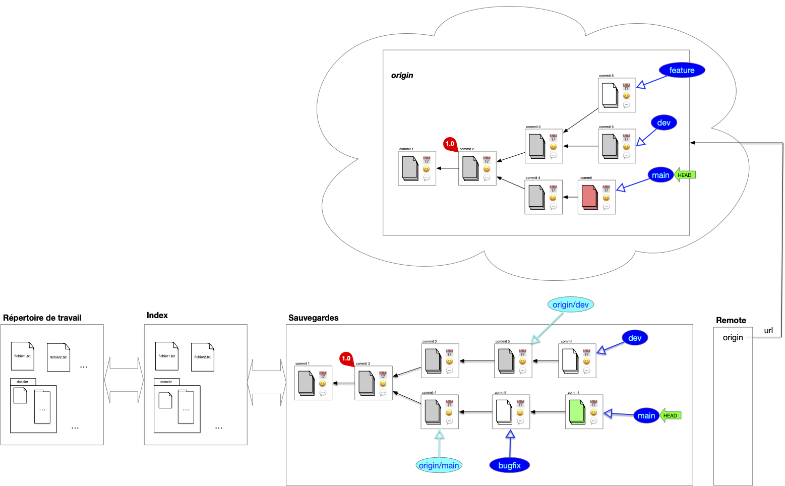
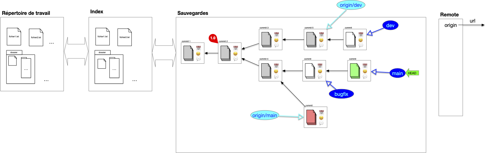
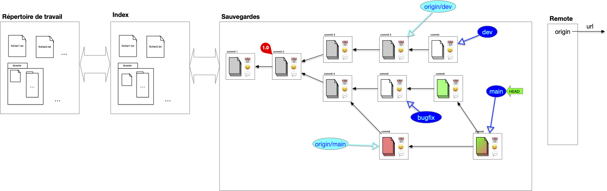
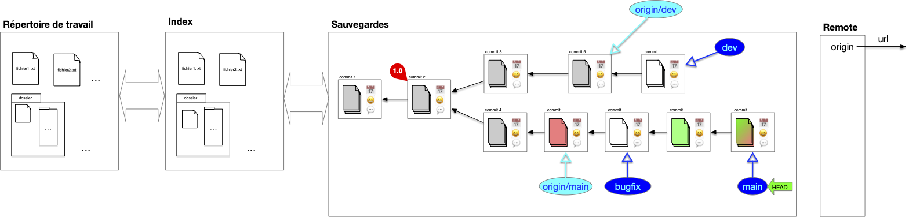
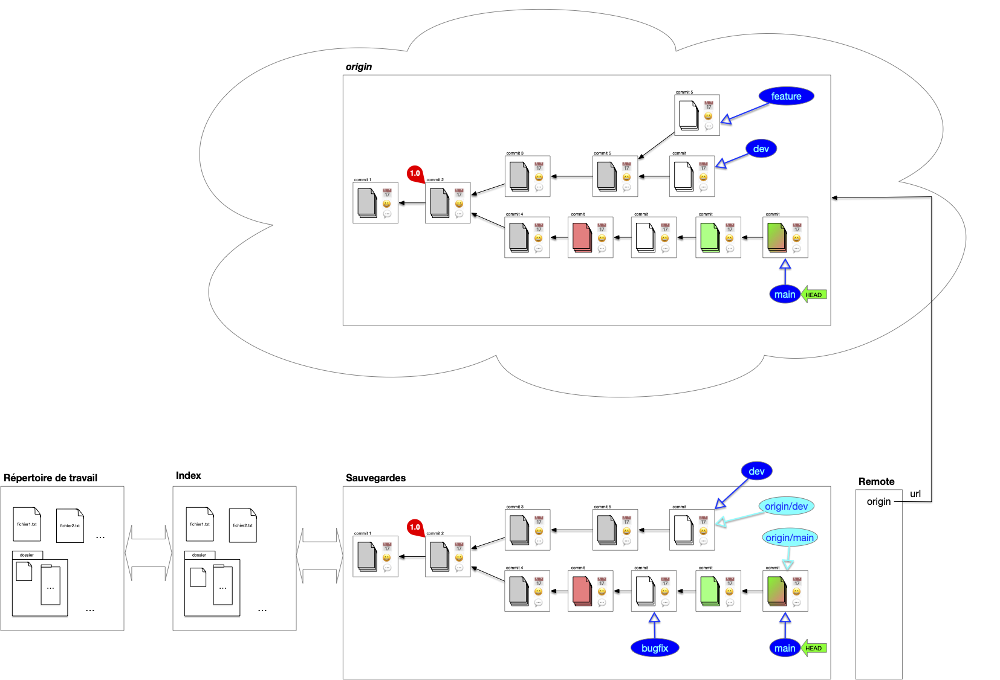
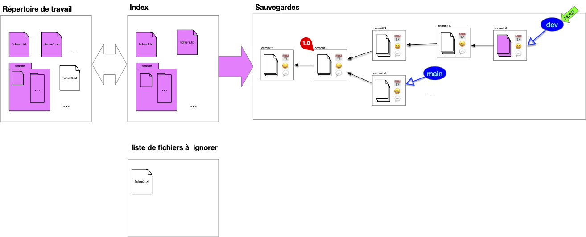

Serveur distant et local
Que l'on travaille à plusieurs ou seul, posséder une version "partageable" de la structure de sauvegarde est appréciable. Parmi tous les avantages, on peut citer :
- de synchroniser les changements lorsque l'on travaille en équipe,
- de permettre à des personnes tierces d'utiliser le projet en le clonant et de proposer des amélioration via des pull request
- de cloner un projet qui nous intéresse
- ...
Un projet peut-être en lien avec de nombreuses copies distantes de celui-ci, que l'on appelle remote. Le projet y accède via son url (adresse internet ou dossier sur le même disque dur).
Clone
Lorsque l'on travaille à plusieurs sur un projet on a coutume de partager, en plus de sa structure de sauvegarde personnelle, une structure commune nommée origin par convention qui regroupe les branches utiles à tous. Pour cela, on commence par désigner la structure de sauvegarde partagée que l'on appelle origin. Ensuite, chaque participant au projet le clone :

L'opération de clonage effectue les opérations suivantes :
Définition
L'opération de cloner un projet consiste à :
- copier sa structure de donnée
- associer
originà l'url de l'origine dans la copie - si le pointeur HEAD de l'origin est sur une branche, la créer dans la structure copiée
- placer le pointeur HEAD de la copie au même endroit (commit ou branche) que l'origine
- garder une références de toutes les branches de l'origine
On remarque que l'on a besoin que de la structure de sauvegarde pour l'origine, l'index et le répertoire de travail sont inutiles.
L'opération de fork ressemble au clonage mais le but est différent. Dans un clonage tous les participants interagissent directement avec l'origine, alors qu'un projet résultant d'un fork peut être vu comme un nouveau projet (il n'est pas en relation directe avec le projet initial).
Branches locales et distantes
Après un clonage, la structure de sauvegarde locale contient, en plus du DAG des commits de l'origin, des références à la structure origin et à ses branches. Les branches de l'origin sont dites distantes (remote). Notez que si la copie contient un lien vers l'original le serveur origin n'a lui aucune information de la copie locale, il ne sait même pas qu'elle existe.
Au cours du temps de l'évolution des branches sur la sauvegarde locale et distantes ces informations peuvent diverger :
- des commits peuvent insérées sur la copie et sur l'origine
- des branches peuvent être crées sur la copie et sur l'origine
On se retrouve alors dans la configuration suivante :

Comme l'origine et la sauvegarde locales ont évoluées chacune de son côté des commits ont été ajouté depuis leur dernière synchronisation mais comme on a fait qu'ajouter des commits et des références il est possible de synchroniser les deux structures.
Pour cela, on commence par synchroniser la sauvegarde distante avec la sauvegarde locale, puis on envoie les évolutions locales vers l'origine.
Synchronisation de branches distances vers locales
La synchronisation se fait branche à branche. Dans l'exemple la sauvegarde locale suit deux branches distantes, origin/main et origin/dev. La branche feature n'est pas suivi, on ne s'en occupe donc pas : la sauvegarde locale n'est pas au courant qu'elle existe.
Seule la branche origin/main à divergé. Pour la synchroniser on commence par récupérer les divergences (on ne montre plus que la sauvegarde locale) :

On a maintenant deux possibilités pour effectuer la synchronisation.
Merge origin/main et main

Rebase main sur origin/main

C'est cette solution qui est à privilégier car elle garde un historique linéaire, plus facile à lire.
Les commits locaux sont réécrit. Il ne faut pas faire de rebase si les commits initiaux étaient déjà sur le serveur origin. Cela causerait d'énorme problèmes aux autres utilisateurs qui référenceraient des commits qui ne sont plus accessibles (voir ci-après).
Synchronisation de branches locales vers distantes
Une fois les synchronisations de l'origine vers le serveur locales terminées, la synchronisation vers l'origine est aisée c'est un fast-forward :

Interagir avec l'origin
Sanctuariser l'historique de l'origine
La principale règle à suivre lorsque l'on participe à un projet avec l'origin est :
À retenir
On ne modifie pas l'historique de l'origine.
Dans l'exemple ci-dessous, l'utilisateur du haut a modifié son historique et celui de l'origine. Les commits rouges de l'utilisateur du bas ne sont plus accessibles depuis l'origine (ils sont toujours présent mais sans pointeur de branche. Les retrouver est très compliqué) :

Le corollaire de la règle principale est :
À retenir
On ne modifie pas son historique commun avec l'origine.
Quand on voudra synchroniser notre travaille avec l'origine, il est indispensable que l'origine que l'on connaisse soit une sous-partie de l'origine actuelle : elle a pu évoluer indépendamment de nous mais il faut pouvoir ajouter nos commit à l'historique à partir du point d'ancrage connu.
Comme la branche de dév et le main sont sur l'origine, le seul moyen de les fusionner est d'utiliser un merge. Ainsi, l'utilisateur du bas pourra toujours se synchroniser avec l'origine :

À retenir
L'historique de toute branche sur l'origin est publique et ne doit pas être altérée.
Mais cela n’empêche pas la réécriture d'historique en locale. Tant que vous n'avez pas publié vos commits vous êtes libre de faire ce que vous voulez.
Si vous travaillez à plusieurs, l'origin va changer rapidement, pour éviter des opérations de synchronisation lourdes :
Bonne pratique
Commiter souvent pour éviter les conflits et les opérations lourdes de synchronisation et montrer aux autres ou vous en êtes.
Enfin, il faut garder l'origine lisible pour tous :
Bonne pratique
L'origine ne doit contenir que des branches utiles. Les branches temporaires ou spécifiques à un utilisateur doivent être limitées.
Mais cela ne doit pas vous empêcher d'avoir de nombreuses branches locales que vous n'allez pas synchroniser avec l'origin.
Réciproquement :
Bonne pratique
Ne conservez en local que des références à des branches de l'origine utiles pour vous.
Cela vous évitera des synchronisation inutiles avec l'origin. Vous pourrez toujours plus tard, lorsque vous en aurez besoin, récupérer une référence de branches spécifique.
Fichiers ignorés
Certains fichiers ne doivent pas être suivis. Par exemple :
- les fichiers que produisent votre code comme les fichiers compilés
- les bibliothèques externe que vous ne faite qu'utiliser
- ...
Mais aussi vos propres fichiers qui risquent d'entrer en collision avec ceux des autres utilisateurs comme
- la configuration de votre IDE pour le projet,
- vos fichiers temporaires
- ...
Et surtout les fichiers confidentiels que vous ne voulez surtout pas voir apparaître sur github :
- les mots de passe de votre base de donnée,
- le dossier mac
.DS_Storecontenant tous les fichiers supprimés - ...
Ces fichiers doivent être ajoutés à une liste de fichier à ignorer, sans ça vous devrez toujours faire attention lorsque vous regarderez les différences entre l'index et le répertoire de travail.
Par exemple, si le fichier3.txt n'est jamais à sauver, une fois ajoutée à la liste des fichiers à ignorer il n'apparaîtra pas comme une différence (mais on pourra toujours à tout moment l'ajouter) :

La liste des fichier à ignorer est très pratique en code pour ignorer les environnements virtuels, les fichiers de configurations de l'IDE, les fichiers compilés, les bibliothèques partagées. Bref tout ce qui n'est pas stricto sensu utile au code du projet.
Pour les besoin du cours, nous ne l'inclurons pas dans les besoins suivant, mais on montrera comment faire en pratique lors des projets.